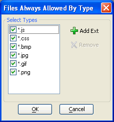

Files by Type List Dialog
The Files by Type List Dialog allows you to enable or restrict access to files by file type.

By default, users are allowed to access files with the .js, .css, .bmp, .jpg, .gif, and .png extensions. You cannot remove these file types from the list of allowed file types.
To add a new file type, click  Add
Ext, enter its extension, and click OK.
Add
Ext, enter its extension, and click OK.
To remove a file type, click  Remove, enter its extension, and click OK. The remove button will be inactive for file types that can not be removed from the list.
Remove, enter its extension, and click OK. The remove button will be inactive for file types that can not be removed from the list.
Limitations
Web publishing applications only.
See Also